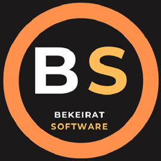

At Bekeirat Software , we develop a wide range of educational and entertainment applications designed to serve learners of all ages. Our goal is to make learning more interactive, accessible, and beneficial for individuals and families alike. Every application we design is built on a foundation of creativity and smart functionality, with the aim of improving learning outcomes and delivering enriching experiences.
We are guided by three core principles: intelligence ، integrity ، and innovation . These values not only inform how we design apps but also influence how we operate and communicate with users. Whether it's an app that develops critical thinking skills or a tool that supports early learning, our goal is to provide tools that are both useful and enjoyable.
We also believe that access to knowledge is a right for everyone. That's why we're committed to providing a growing library of high-quality apps completely free and without any limitations. Everyone deserves the opportunity to learn and explore—and we're here to make that happen, app by app.